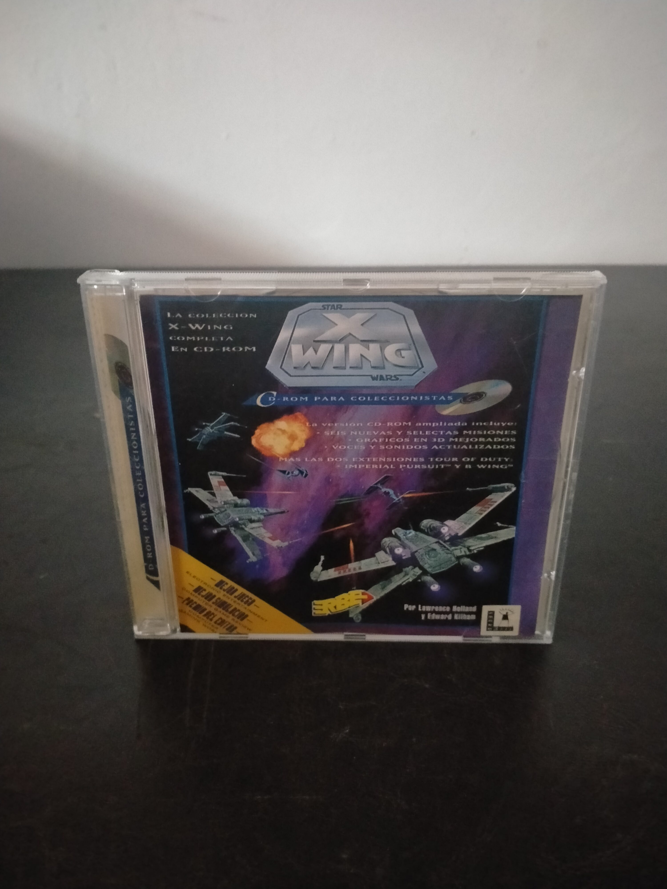

Ficha #000000
Star Wars: X-Wing - CD-ROM para Coleccionistas
Edición española en CD-ROM para coleccionistas de Star Wars: X-Wing, el influyente simulador de combate espacial diseñado por Lawrence Holland y desarrollado por el equipo que posteriormente adoptaría el nombre Totally Games. Esta recopilación reúne el juego original y las ampliaciones Tour of Duty: Imperial Pursuit y B-Wing, además de incorporar misiones nuevas o revisadas, secuencias gráficas mejoradas, voces digitalizadas y efectos de sonido actualizados. La edición utiliza una versión evolucionada del motor de X-Wing, próxima tecnológicamente a la empleada en TIE Fighter, con mejoras visuales como sombreado Gouraud y una presentación audiovisual más elaborada que la edición inicial en disquetes. Su combinación de simulación, gestión de energía, asignación de escudos, control de armamento y campañas estructuradas convirtió a X-Wing en una referencia fundamental de los simuladores espaciales para compatibles PC y en una de las adaptaciones más relevantes del universo Star Wars durante la primera mitad de los años noventa. Esta versión localizada y distribuida en España por Erbe Software posee especial interés documental por reunir en un único soporte óptico la experiencia completa de X-Wing para MS-DOS.
- Formato
- Jewel Case
- Plataforma
- MsDos
- Género
- Simulación espacial Combate espacial Simulación de vuelo Ciencia ficción Compilación
- Serie
- Todos Jewel Case
- Desarrollador
- Totally Games, LucasArts
- Distribuidor
- LucasArts, Erbe Software
- EAN
- —
Contenido de la edición
- Caja Jewel Case
- CD-ROM
Preservación
- Protección
- No determinado
- Formato recomendado
- BIN/CUE
- Jugable en virtualización
- Sí
Preservación recomendada mediante imagen completa del CD-ROM en formato BIN/CUE, conservando la estructura de datos y cualquier pista adicional del soporte. La ejecución es viable mediante DOSBox u otro entorno MS-DOS virtualizado, preferentemente con emulación de joystick y la imagen del disco montada como unidad de CD-ROM.